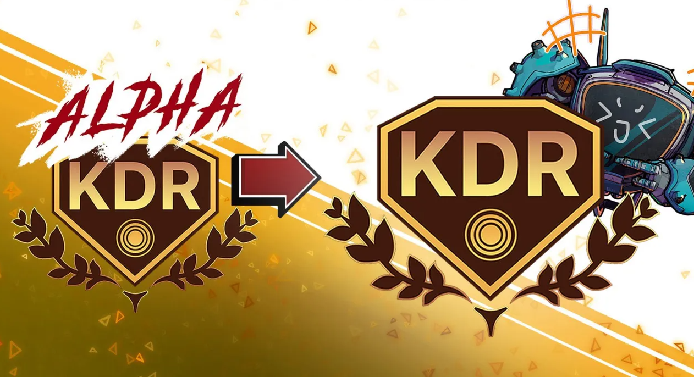

Requirements for converting alpha-KDR to $KDR

- 1️⃣ Minimum NFT Requirements. wallet holder must hold one of the following:
- 1 Spark Suit NFT or 1 Spirit Guardian NFT.
- 2️⃣ Synergy / 1 Lockup Setup Requirements.
- Players must either synergize 3 NFT's for 1 week or lock up 1 NFT once a week consecutively until TGE
- Each missed week of Synergy setup results in a loss of convertable $KDR.
- 3️⃣ Grace Period for Missed Weeks.
- All users are given a 2-week grace period for the entire duration leading up to the TGE, not per month.
- This means: Users can miss up to 2 separate weeks total during the pre-TGE period and still convert 100% of their $KDR.
After the 2-week grace period, any additional missed weeks will reduce the convertible $KDR proportionally based on the number of Synergy weeks completed.
- 4️⃣ Portion of Alpha-KDR Convertible:
- The portion of Alpha-KDR that can be converted to $KDR is proportional to the number of Synergy weeks completed beyond the grace period.
- Example: If there are 12 Synergy weeks before TGE, and a player completes 10 weeks (including the grace period), they can convert 10/12 = 83% of their Alpha-KDR to $KDR.
(There isn’t a final date for TGE, the number of weeks is variable)
Note: These details above are subject to change. For more information, visit: Kaidro Chronicle Status.
Stay updated by adding this google calendar